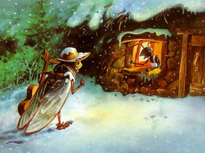

- Ön művész?! - fitymálta a tücsköt a hangya.
- Hisz mint az ökörnyál, leng, lebeg a hangja.
Dalában nyoma sincs vérmes szenvedélynek,
sőt ha Ön szól, még az esti csend is mélyebb.
Mily csekély eszköztár, mily szűk formakészlet!
Csoda, hogy Ön mégis figyelemre késztet.
Szólt a tücsök halkan:
gondgyomláló dalban
épp ez a művészet.
